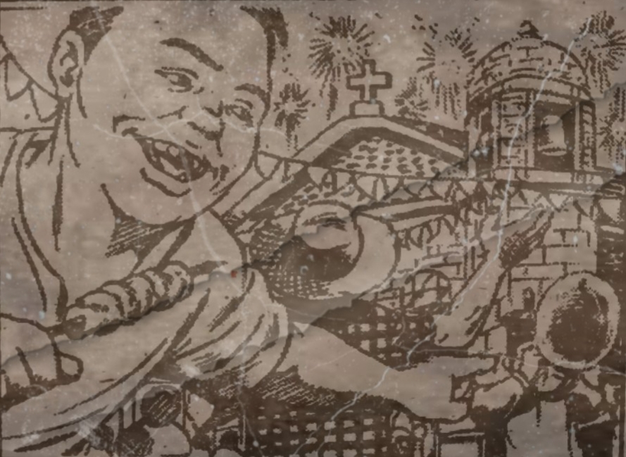
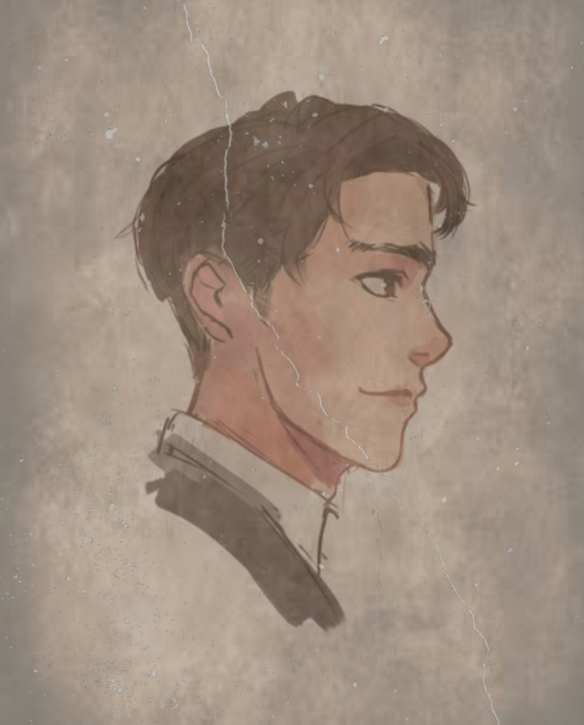
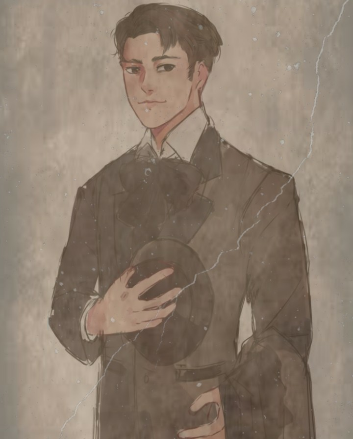
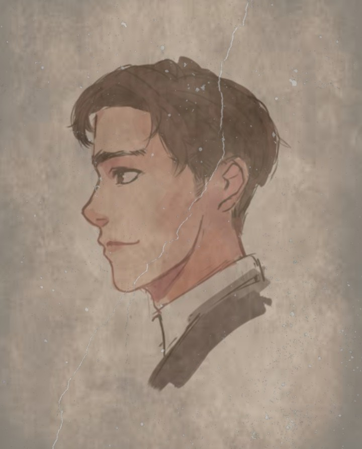

Kabanata 26
Bisperas ng Pista

Bisperas noon ng pista sa bayan ng San Diego at abala maghanda ang mga tao. Mayroong mga tao na naghahanda ng pagkain at mga mamahaling alak na ihahanda sa mahahabang mesa. May mga abala naman sa paglilinis ng kani-kanilang bahay. Nilabas ang mga mamahaling kubyertos at mga lalagyan ng tabako, hitso at sigarilyo.
Ang mga tao ay abala rin sa paglilinis at pag aayos ng kani-kanilang bahay at ang mga gagamitin sa prusisyon. May mga dumating na mga tahur. Habang abala ang lahat sa paghahanda, Inaasikaso ni Crisostomo ang kanyang ginagawa na paaralan kasama ni Nol Juan.
Repleksyon
Sa kabanatang ito, makikita ang pagiging mabuti ng mga Pilipino sa kanilang mga bisita. Inaasikaso at pinaghahanda ang kanilang bisita ng kanilang handa. Kahit walang matira sa ating pagkain basta masiguro lang natin na busog at masaya ang ating mga bisita. Iba-iba man ang ating lahing pinagmulan, ipadama pa din ang mainit na pagtanggap. Makikita din dito na kay sa tumulong sa pag aayos, inuna niya na asikasuhin ang kinabukasan ng mga bata, inuna niya ang mas importante bagay kay sa maghanda.
Mahalagang Tauhan


